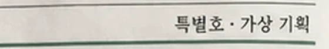
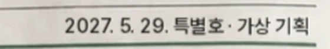
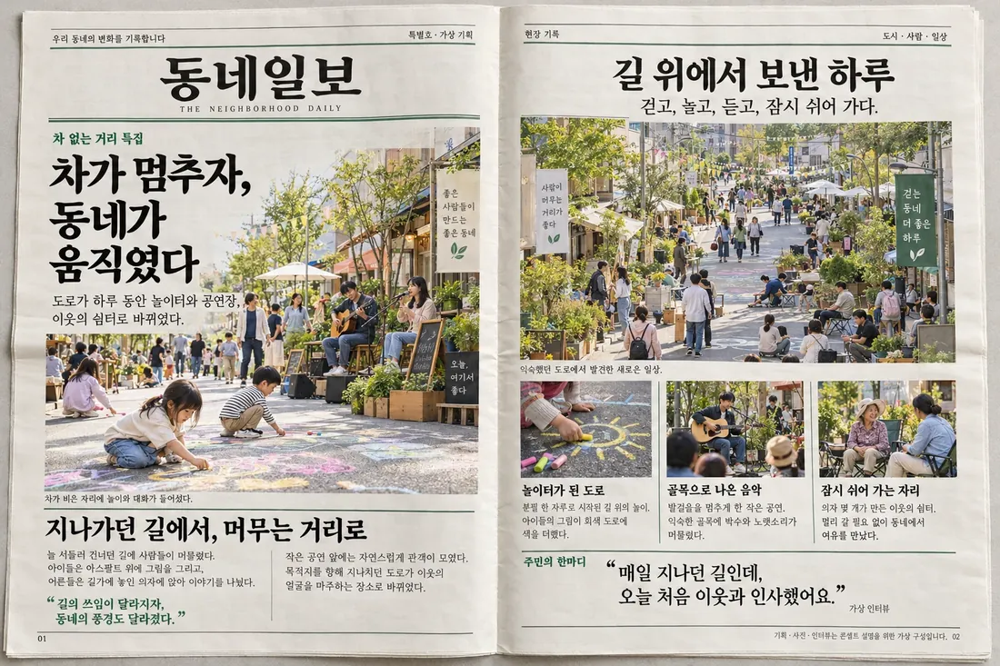

신문이면 날짜가 있어야
머리 줄 "특별호 · 가상 기획" 앞에 발행일을 넣었다. 형식을 빌렸으면 형식의 약속(날짜·호수)을 지켜야 진짜처럼 읽힌다.
Print ReferenceNo. 66
넘겨 보는 신문. 1면을 넘기면 2면이 나온다. 신문 문법(제호·발행 줄·키커·제목·리드 사진·단 나눔·인용)이 정보의 순서를 정하고, 한 쪽씩 넘기는 동작이 "다음 이야기"를 기다리게 한다.
2027. 5. 29. 특별호 · 가상 기획
차 없는 거리 하루를 동네 신문 두 쪽으로 정리한 소식지. 펼침면 사진을 쪽마다 나눠, 1면이 왼쪽 가장자리를 축으로 넘어가며 2면을 드러내게 했다(누르기·←→·쓸어넘기기). 신문인데 없던 발행일도 넣었다. 가상 예시


머리 줄 "특별호 · 가상 기획" 앞에 발행일을 넣었다. 형식을 빌렸으면 형식의 약속(날짜·호수)을 지켜야 진짜처럼 읽힌다.
손대지 않은 것명조 제호와 녹색 이중 괘선, 리드 사진 위 큰 제목, 3단 사진 기사, "주민의 한마디" 인용까지 원본 구성이 이미 신문 문법을 잘 지킨다. 그래서 고친 곳은 한 줄뿐이다.

원본: 이미지 생성 AI로 만든 시안. 글자가 그림에 박혀 있다.
1면 → 2면. 넘어가는 동안 쪽 뒷면에 앞면 글자가 옅게 비치고, 아래 쪽에 그림자가 진다. 화면에 들어오면 한 번 저절로 넘겼다 돌아온다.
온라인 소식지, 행사 결과 보고, 학급 신문
제호 → 이중 괘선 → 키커 → 제목 → 리드 → 사진 설명 → 소제목 → 2단 본문 → 인용.
학교 행사 결과, 학부모 소식지, 연수 후기
같은 폭 사진 + 굵은 소제목 + 두 줄 설명을 세 번. 한 장면을 세 갈래로.
프로그램·부스 소개
원칙 — 그림은 글자 없이 뽑고, 글자는 HTML·PPT로 얹는다. AI 그림 속 작은 한글은 거의 깨지고, 박힌 글자는 고칠 수 없다.
Photograph of an open two-page Korean community newspaper lying flat on a light gray table, top-down, 3:2. Off-white newsprint with subtle texture and a soft fold shadow in the middle. Left page: a masthead area, double green rules, a large lead photo of a car-free neighborhood street with children drawing with chalk, a two-column text block. Right page: a wide street-festival photo with trees, potted plants, people strolling, three small photos in a row (chalk sun, busking guitarist, neighbors chatting on folding chairs), a pull-quote area. Calm late-spring daylight. Leave text areas as blank gray lines; no readable text.
#E1DED950%#C4BEB416%#A49C8B11%#80786210%#5551437%#22211E6%완성본에서 뽑은 주요 색과 화면 차지 비율.
u 단위(지면 폭 기준) 숫자를 바꾸면 됩니다.